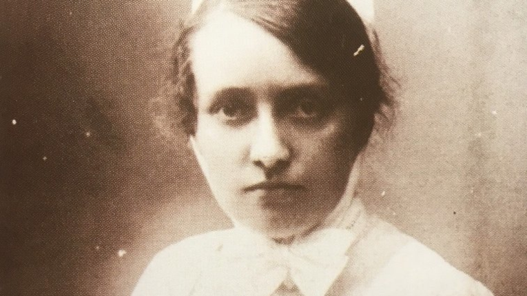
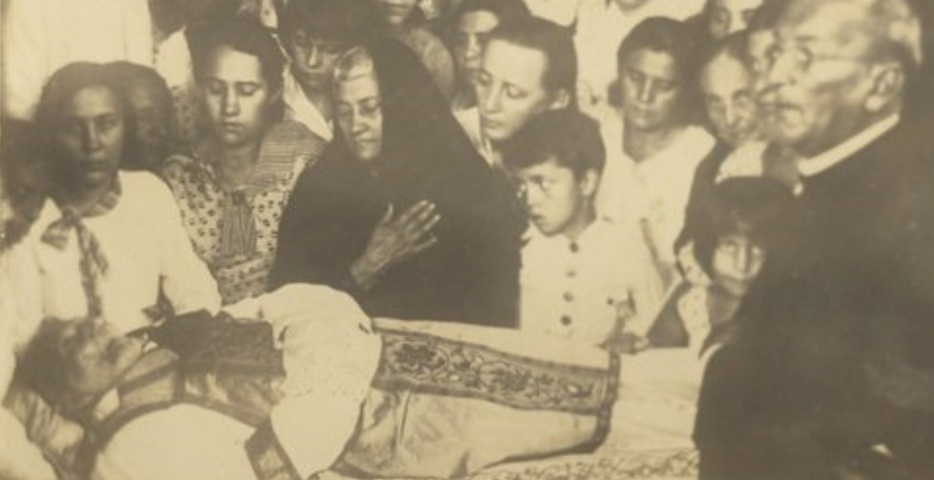
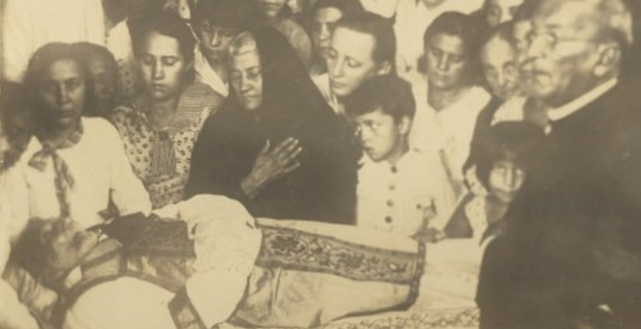

Bárbara Pereira de Alencar
Nascida no sertão pernambucano em Exu, no ano de 1760, Bárbara de Alencar foi uma das poucas mulheres a participar ativamente da Revolução Pernambucana de 1817. Embora seja historicamente reconhecida como a primeira presa política do Brasil, este título tem sido questionado por pesquisadores que apontam a possível participação de outras mulheres, especialmente negras e indígenas, em movimentos insurrecionais da época.
Dona Bárbara do Crato, como também era conhecida e figura central da história cearense, não era apenas uma revolucionária. Radicada por muitos anos na cidade, construiu uma família e uma vida repleta de acontecimentos. Mãe dos revolucionários José Martiniano e Tristão Gonçalves de Alencar, além de avó do célebre escritor José de Alencar, sua influência se estendia além dos muros de sua casa. A matriarca da família Alencar, que também tinha laços com o ex-governador Miguel Arraes, deixou um legado duradouro.
O poder político de padre Cícero declinou a partir da década de 1920, bem como a sua saúde. A Revolução de 1930 marcou o fim de qualquer influência política do padre em Juazeiro e no Ceará. Com a idade bastante avançada,restou a ele aceitar os novos tempos, principalmente porque sua saúde já não era a mesma. Os últimos anos de padre Cícero foram marcados pela ocorrência de uma catarata que o deixou cego do olho esquerdo e com visão mínima do olho direito. O padre, ainda, passou por uma cirurgia para tentar recuperar sua visão, mas não obteve sucesso nisso. Também teve nefrite e graves problemas intestinais. Seus últimos meses foram de grande agonia por conta do seu estado de saúde, e seu falecimento aconteceu no dia 20 de julho de 1934, aos 90 anos de idade. Padre Cícero lutou por toda a vida pelo reconhecimento do milagre de Juazeiro e por sua reabilitação, mas não viveu para ver isso acontecer.
Vida Religiosa
No cursinho, Cícero encontrou grandes diferenças entre a religiosidade de Fortaleza e a do vale do Cariri (onde fica a cidade de Crato). Isso se deveu ao fato de que o interior do Ceará sofria com a pouca presença de autoridades eclesiásticas, sobretudo pelo fato de que essas autoridades não estavam dispostas a visitar tais regiões. O jornalista Lira Neto aponta que essa situação criou um problema do ponto de vista do controle realizado pela Santa Sé. Ele afirma que esse vácuo [de presença das autoridades católicas] deu origem a uma religiosidade espontânea no meio do povo, um misticismo rico em manifestações, mas pouco afeito ao controle e aos rituais da Igreja oficial.
Em sua formação como padre, Cícero encontrou um ensino rígido no seminário de Fortaleza. Lá, ele não era considerado um dos melhores alunos, sobretudo nas disciplinas de oratória e canto gregoriano. Além disso, teve problemas com o reitor do seminário, que não concordava com suas opiniões místicas. O reitor do seminário, o francês Pierre-Auguste Chevalier, chegou a sugerir que Cícero não fosse ordenado padre, mas o bispo do Ceará, dom Luis Antônio dos Santos, decidiu ir contra essa recomendação e ordenou Cícero Romão padre no dia 30 de novembro de 1870. Conhecido como padre Cícero agora, ele decidiu retornar para Crato depois de sua ordenação.
Em 1871, padre Cícero foi convidado para celebrar uma missa em Juazeiro, povoado vizinho a Crato. Lá, ele supostamente teve um sonho, interpretado como uma mensagem divina para que ele ficasse no povoado e cuidasse de suas questões religiosas. Padre Cícero recebeu um convite para permanecer no povoado em abril de 1872. No mesmo ano, ele se tornou o capelão da Capela de Nossa Senhora das Dores.
Curiosidades de Padre Cicero
- Os admiradores do Padre Cícero contavam que, entre seus milagres, ele costumava pendurar o chapéu num prego imaginário.
- Acusado de continuar estimulando o fanatismo, Cícero foi suspenso da ordem e entrou para a política. Foi o primeiro prefeito de Juazeiro, tomando posse em 4 de outubro de 1911. Acabou sendo destituído pelo governador Franco Rabelo. Padre Cícero lutou, então, ao lado dos rebeldes contrários a Rabelo, num movimento conhecido como Guerra da Sedição. Rabelo foi deposto e Cícero reassumiu sua posição em 1927.
- Em 1926, Padre Cícero e Lampião se encontraram em Juazeiro do Norte. O encontro, cercado de expectativas e curiosidade, foi marcado por uma tentativa de negociação. Padre Cícero, influente figura política e religiosa, buscava uma solução pacífica para os conflitos na região e viu em Lampião uma peça importante nesse jogo.
- Numa missa, em 1º de março de 1889, um milagre começaria a transformar o homem em lenda: no momento da comunhão, a hóstia teria se transformado em sangue na boca da beata Maria de Araújo.
- Padre Cícero teve participação na política como prefeito, chegou a ser governador do Ceará, e em 1926 foi eleito deputado federal com expressiva votação, mas não desejou assumir o cargo e nem foi ao Rio de Janeiro para a sua posse, segundo alguns historiadores, o objetivo do padre com a sua eleição era de mostrar aos coroneis e poderosos que o povo carregava consigo o poder da mudança!
- Seu enterro foi acompanhado por uma multidão de mais de 60 mil fiéis.
- Em terras herdadas do padre Cícero, o beato José Lourenço (1872-1946) construiu a Comunidade do Caldeirão. Durante o Estado Novo, a Comunidade, considerada um foco de comunismo, foi destruída. Cerca de mil seguidores de José Lourenço organizaram uma nova comunidade na Serra do Araripe, mas foram perseguidos e massacrados.
 
